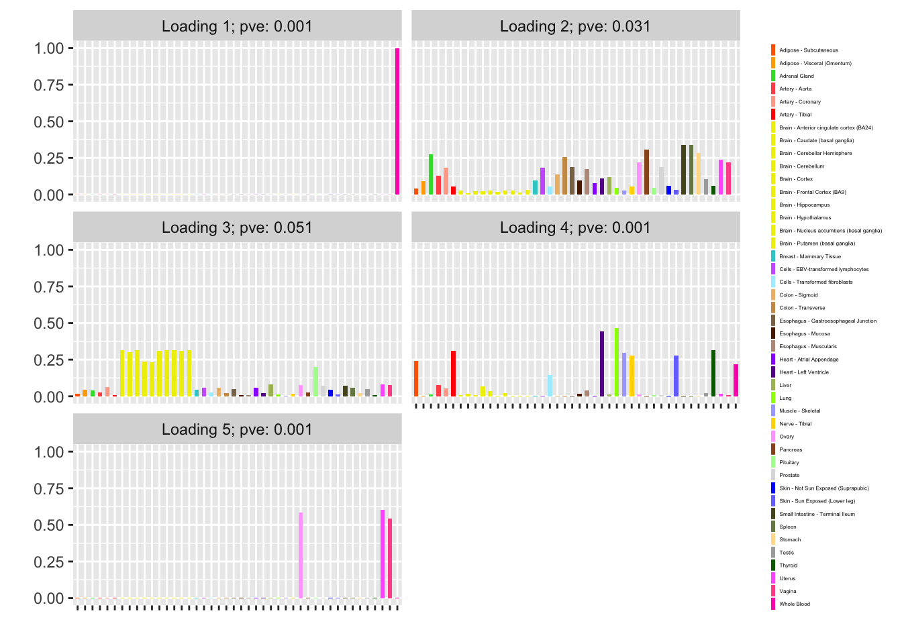
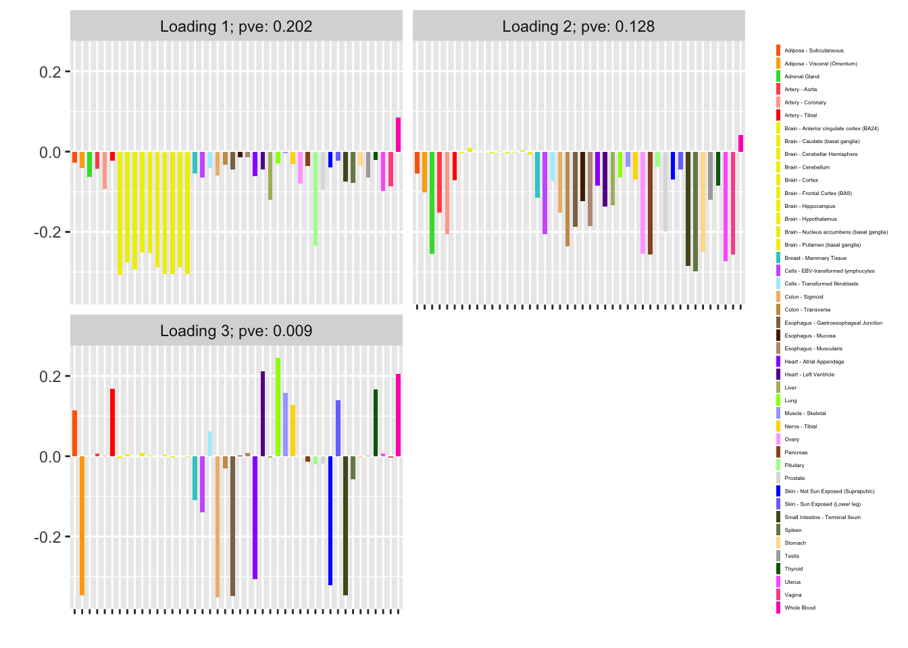

Matrix factorization of count data
Jason Willwerscheid
9/20/2018
Last updated: 2018-09-23
workflowr checks: (Click a bullet for more information)-
✔ R Markdown file: up-to-date
Great! Since the R Markdown file has been committed to the Git repository, you know the exact version of the code that produced these results.
-
✔ Environment: empty
Great job! The global environment was empty. Objects defined in the global environment can affect the analysis in your R Markdown file in unknown ways. For reproduciblity it’s best to always run the code in an empty environment.
-
✔ Seed:
set.seed(20180714)The command
set.seed(20180714)was run prior to running the code in the R Markdown file. Setting a seed ensures that any results that rely on randomness, e.g. subsampling or permutations, are reproducible. -
✔ Session information: recorded
Great job! Recording the operating system, R version, and package versions is critical for reproducibility.
-
Great! You are using Git for version control. Tracking code development and connecting the code version to the results is critical for reproducibility. The version displayed above was the version of the Git repository at the time these results were generated.✔ Repository version: de34f14
Note that you need to be careful to ensure that all relevant files for the analysis have been committed to Git prior to generating the results (you can usewflow_publishorwflow_git_commit). workflowr only checks the R Markdown file, but you know if there are other scripts or data files that it depends on. Below is the status of the Git repository when the results were generated:
Note that any generated files, e.g. HTML, png, CSS, etc., are not included in this status report because it is ok for generated content to have uncommitted changes.Ignored files: Ignored: .DS_Store Ignored: .Rhistory Ignored: .Rproj.user/ Ignored: docs/.DS_Store Ignored: docs/figure/.DS_Store Untracked files: Untracked: analysis/binary_data.Rmd Untracked: data/greedy19.rds
Expand here to see past versions:
| File | Version | Author | Date | Message |
|---|---|---|---|---|
| Rmd | de34f14 | Jason Willwerscheid | 2018-09-23 | wflow_publish(“analysis/count_data.Rmd”) |
| html | 410eb80 | Jason Willwerscheid | 2018-09-22 | Build site. |
| Rmd | 5bfea2c | Jason Willwerscheid | 2018-09-22 | wflow_publish(“analysis/count_data.Rmd”) |
| html | 8b73159 | Jason Willwerscheid | 2018-09-21 | Build site. |
| Rmd | 884f8fa | Jason Willwerscheid | 2018-09-21 | wflow_publish(“analysis/count_data.Rmd”) |
Introduction
In a previous analysis, I used FLASH to obtain a nonnegative matrix factorization of the GTEx donation matrix. There, I proceeded as if the observations were normally distributed. Here, I explore a more sophisticated approach to count data.
Model
I assume that the data is generated as \[ Y \sim \text{Poisson}(\mu), \] where \[ \log(\mu) = LF' = \sum_{k = 1}^K l_k f_k', \] with an ASH prior on the entries of each loading \(l_k\) and each factor \(f_k\) \[ l_k \sim g_{l_k},\ f_k \sim g_{f_k}. \]
To account for overdispersion, one can also fit the model \[ \log(\mu) = LF' + E, \] where the entries of \(E\) are i.i.d. \(N(0, \sigma^2)\) and \(\sigma^2\) is to be estimated.
Idea
The general idea is outlined by Matthew Stephens here.
To apply the idea to FLASH, I replace the part of the objective function that comes from the residuals with the Poisson log likelihood \[ \ell(\mu) = \sum_{i, j} -\mu_{ij} + Y_{ij} \log \mu_{ij}. \] Set \(\eta_{ij} = \log \mu_{ij}\) so that \[ \ell(\eta) = \sum_{i, j} -e^{\eta_{ij}} + Y_{ij} \eta_{ij}. \]
Now do a second-order Taylor expansion of \(\ell(\eta)\) around some (for now, arbitrary) point \(\eta^\star\): \[ \ell(\eta) = \ell(\eta^\star) + (\eta - \eta^\star) \ell'(\eta^\star) + \frac{(\eta - \eta^\star)^2}{2} \ell''(\eta^\star). \]
Up to a constant, this is the log likelihood for the distribution \[ \eta \sim \text{Normal}\left(\eta^\star - \frac{\ell'(\eta^\star)}{\ell''(\eta^\star)}, -\frac{1}{\ell''(\eta^\star)}\right). \]
Thus, given a good enough choice of \(\eta^\star\), we should be able to run FLASH on the “pseudo-data” \[ X = \eta^\star - \frac{\ell'(\eta^\star)}{\ell''(\eta^\star)} \] with “standard errors” \[ S = \frac{1}{\sqrt{-\ell''(\eta^\star)}}. \]
I calculate \[ \begin{aligned} \ell'(\eta^\star) &= \sum_{i, j} -e^{\eta^\star_{ij}} + Y_{ij} \\ &= \sum_{i, j} Y_{ij} - \mu^\star_{ij} \\ \ell''(\eta^\star) &= \sum_{i, j} -e^{\eta^\star_{ij}} \\ &= \sum_{i, j} -\mu^\star_{ij}, \end{aligned} \] which yields pseudo-data \[ X = \log(\mu^\star) + \frac{Y - \mu^\star}{\mu^\star} \] with standard errors \[ S = \frac{1}{\sqrt{\mu^\star}}.\]
To fit the model \(\log(\mu) = LF'\), one fixes the standard errors by setting var_type = "zero". To fit the overdispersed model \(\log(\mu) = LF' + E\), one sets var_type = "constant" so that each observation has variance \(S_{ij}^2 + \sigma^2\).
Now, the crux in all of this is to choose an \(\eta^\star\) that is as close as possible to the \(\eta\) that minimizes the objective function. An iterative procedure suggests itself whereby one fits FLASH to the pseudo-data generated by a given choice of \(\eta^\star\), then updates \(\eta^\star\) to be the posterior mean given by the FLASH fit, then fits FLASH to the pseudo-data generated by the new \(\eta^\star\), and so on until convergence.
Objective function
I noted above that the objective I am interested in is approximately the same as the FLASH objective “up to a constant.” This constant, however, can depend on the choice of \(\eta^\star\). To monitor the progress of the fit, it will be useful to be able to calculate its (approximate) value.
The log likelihood I am interested in is \[ \ell(\eta) \approx \ell(\eta^\star) + (\eta - \eta^\star) \ell'(\eta^\star) + \frac{(\eta - \eta^\star)^2}{2} \ell''(\eta^\star). \]
The log likelihood of the normal approximation is \[ \begin{aligned} \ell_N(\eta) &= -\frac{1}{2} \log \left( \frac{2 \pi}{-\ell''(\eta^\star)} \right) + \frac{\ell''(\eta^\star)}{2} \left( \eta - \eta^\star + \frac{\ell'(\eta^\star)}{\ell''(\eta^\star)} \right)^2 \\ &= -\frac{1}{2} \log \left( \frac{2 \pi}{-\ell''(\eta^\star)} \right) + \frac{(\ell'(\eta^\star))^2}{2 \ell''(\eta^\star)} + (\eta - \eta^\star) \ell'(\eta^\star) + \frac{(\eta - \eta^\star)^2}{2} \ell''(\eta^\star) \end{aligned} \] which gives \[ \ell(\eta) \approx \ell_N(\eta) + \ell(\eta^\star) + \frac{1}{2} \log \left( \frac{2 \pi}{-\ell''(\eta^\star)} \right) - \frac{(\ell'(\eta^\star))^2}{2 \ell''(\eta^\star)}.\]
In the Poisson case studied here, the objective can thus be calculated as the FLASH objective plus \[ \sum_{i, j} -\mu^\star_{ij} + Y_{ij} \log \mu^\star_{ij} + \frac{1}{2}\log \left( \frac{2 \pi}{\mu^\star_{ij}} \right) + \frac{(Y_{ij} - \mu^\star_{ij})^2}{2\mu^\star_{ij}}.\]
Code and example
First I load the data:
devtools::load_all("~/GitHub/flashr")
#> Loading flashr
devtools::load_all("~/GitHub/ebnm")
#> Loading ebnm
raw <- read.csv("https://storage.googleapis.com/gtex_analysis_v6/annotations/GTEx_Data_V6_Annotations_SampleAttributesDS.txt",
header=TRUE, sep='\t')
data <- raw[, c("SAMPID", "SMTSD")] # sample ID, tissue type
# Extract donor ID:
tmp <- strsplit(as.character(data$SAMPID), "-")
data$SAMPID <- as.factor(sapply(tmp, function(x) {x[[2]]}))
names(data) <- c("DonorID", "TissueType")
data <- suppressMessages(reshape2::acast(data, TissueType ~ DonorID))
missing.tissues <- c(1, 8, 9, 20, 21, 24, 26, 27, 33, 36, 39)
data <- data[-missing.tissues, ]
# Drop columns with no samples:
data = data[, colSums(data) > 0]
gtex.colors <- read.table("https://github.com/stephenslab/gtexresults/blob/master/data/GTExColors.txt?raw=TRUE",
sep = '\t', comment.char = '')
gtex.colors <- gtex.colors[-c(7, 8, 19, 20, 24, 25, 31, 34, 37), 2]
gtex.colors <- as.character(gtex.colors)I will use the following functions to fit the model:
# Computing objective (ELBO) -------------------------------------------
calc_obj <- function(fl, the_data, mu) {
return(fl$objective +
sum(-mu + the_data * log(mu) +
0.5 * (log(2 * pi / mu) + (the_data - mu)^2 / mu)))
}
# Calculating pseudo-data ----------------------------------------------
calc_X <- function(the_data, mu) {
return(log(mu) + (the_data - mu) / mu)
}
calc_S <- function(the_data, mu) {
return(1 / sqrt(mu))
}
set_pseudodata <- function(the_data, mu) {
return(flash_set_data(calc_X(the_data, mu), S = calc_S(the_data, mu)))
}
# Setting FLASH parameters ---------------------------------------------
# Initialization function for nonnegative loadings
# (but arbitrary factors):
my_init_fn <- function(Y, K = 1) {
ret = udv_svd(Y, K)
sum_pos = sum(ret$u[ret$u > 0]^2)
sum_neg = sum(ret$u[ret$u < 0]^2)
if (sum_neg > sum_pos) {
return(list(u = -ret$u, d = ret$d, v = -ret$v))
} else
return(ret)
}
get_init_fn <- function(nonnegative = FALSE) {
if (nonnegative) {
return("my_init_fn")
} else {
return("udv_svd")
}
}
get_ebnm_fn <- function(nonnegative = FALSE) {
if (nonnegative) {
return(list(l = "ebnm_ash", f = "ebnm_pn"))
} else {
return(list(l = "ebnm_pn", f = "ebnm_pn"))
}
}
get_ebnm_param <- function(nonnegative = FALSE) {
if (nonnegative) {
return(list(l = list(mixcompdist = "+uniform"),
f = list(warmstart = TRUE)))
} else {
return(list(l = list(warmstart = TRUE),
f = list(warmstart = TRUE)))
}
}
# Initializing mu and running FLASH ------------------------------------
init_mu <- function(the_data, f_init) {
if (is.null(f_init)) {
return(matrix(colMeans(the_data),
nrow = nrow(the_data), ncol = ncol(the_data),
byrow = TRUE))
} else {
return(exp(f_init$fitted_values))
}
}
greedy_iter <- function(the_data, mu, f_init, niter,
nonnegative = FALSE, var_type = "zero") {
suppressWarnings(
flash_greedy_workhorse(set_pseudodata(the_data, mu),
Kmax = 1,
f_init = f_init,
var_type = var_type,
ebnm_fn = get_ebnm_fn(nonnegative),
ebnm_param = get_ebnm_param(nonnegative),
init_fn = get_init_fn(nonnegative),
verbose_output = "",
nullcheck = FALSE,
maxiter = niter)
)
}
backfit_iter <- function(the_data, mu, f_init, kset, niter,
nonnegative = FALSE, var_type = "zero") {
suppressWarnings(
flash_backfit_workhorse(set_pseudodata(the_data, mu),
kset = kset,
f_init = f_init,
var_type = var_type,
ebnm_fn = get_ebnm_fn(nonnegative),
ebnm_param = get_ebnm_param(nonnegative),
verbose_output = "",
nullcheck = FALSE,
maxiter = niter)
)
}
run_one_fit <- function(the_data, f_init, greedy, maxiter = 200,
n_subiter = 200, nonnegative = FALSE,
var_type = "zero",
verbose = TRUE, tol = .01) {
mu <- init_mu(the_data, f_init)
if (greedy) {
fl <- greedy_iter(the_data, mu, f_init, n_subiter,
nonnegative, var_type)
kset <- ncol(fl$fit$EL) # Only "backfit" the greedily added factor
mu <- exp(fl$fitted_values)
} else {
fl <- f_init
kset <- 1:ncol(fl$fit$EL) # Backfit all factor/loadings
}
# The objective can get stuck oscillating between two values, so we
# need to track the last two values attained:
old_old_obj <- -Inf
old_obj <- -Inf
diff <- Inf
iter <- 0
while (diff > tol && iter < maxiter) {
iter <- iter + 1
fl <- backfit_iter(the_data, mu, fl, kset, n_subiter,
nonnegative, var_type)
fl$objective <- calc_obj(fl, the_data, mu)
diff <- min(abs(fl$objective - old_obj),
abs(fl$objective - old_old_obj))
old_old_obj <- old_obj
old_obj <- fl$objective
mu <- exp(fl$fitted_values)
if (verbose) {
message("Iteration ", iter, ": ", fl$objective)
}
}
return(fl)
}I greedily add a factor by initializing \(\mu^\star\) to the column means of the data, then alternating between running FLASH on the “pseudo-data” corresponding to the current \(\mu^\star\) and updating \(\mu^\star\) to be the posterior mean of the current FLASH fit:
fl <- run_one_fit(data, f_init = NULL, greedy = TRUE, var_type = "zero")
#> Iteration 1: -1260894162288.67
#> Iteration 2: -463857047403.473
#> Iteration 3: -170643479882.396
#> Iteration 4: -62776237234.5249
#> Iteration 5: -23094096826.1362
#> Iteration 6: -8495853575.88706
#> Iteration 7: -3125460273.93256
#> Iteration 8: -1149803165.46822
#> Iteration 9: -422999642.579889
#> Iteration 10: -155623640.841263
#> Iteration 11: -57261563.5405482
#> Iteration 12: -21076221.7751938
#> Iteration 13: -7764412.09339289
#> Iteration 14: -2867291.88319422
#> Iteration 15: -1065747.76233328
#> Iteration 16: -402996.603236368
#> Iteration 17: -159177.534036103
#> Iteration 18: -69469.4385910787
#> Iteration 19: -36455.0120088927
#> Iteration 20: -24297.6435128183
#> Iteration 21: -19817.4081220096
#> Iteration 22: -18173.1057830217
#> Iteration 23: -17596.0378156151
#> Iteration 24: -17430.9092946137
#> Iteration 25: -17390.3239093269
#> Iteration 26: -17383.7304196358
#> Iteration 27: -17383.2088444385
#> Iteration 28: -17383.2107211963Although the initial estimate of \(\mu^\star\) is terrible, the objective seems to eventually converge.
I continue to greedily add factors in the same way:
fl <- run_one_fit(data, f_init = fl, greedy = TRUE, var_type = "zero")
#> Iteration 1: -16636.2584752266
#> Iteration 2: -16585.7129718596
#> Iteration 3: -16580.7737927336
#> Iteration 4: -16580.7926674945
#> Iteration 5: -16580.8273337167
#> Iteration 6: -16580.8412000009
#> Iteration 7: -16580.8467232789
fl <- run_one_fit(data, f_init = fl, greedy = TRUE, var_type = "zero")
#> Iteration 1: -16580.848902757
#> Iteration 2: -16580.8497609812Since the third factor no longer offers any improvement, I stop adding factors and backfit:
fl <- run_one_fit(data, f_init = fl, greedy = FALSE, var_type = "zero")
#> Iteration 1: -16409.37888059
#> Iteration 2: -16181.1318746537
#> Iteration 3: -16095.2934227321
#> Iteration 4: -16042.4790068713
#> Iteration 5: -16018.4893710094
#> Iteration 6: -16008.4462444063
#> Iteration 7: -16004.7357433436
#> Iteration 8: -16003.5327873971
#> Iteration 9: -16003.1145834296
#> Iteration 10: -16002.9179080359
#> Iteration 11: -16002.8323975208
#> Iteration 12: -16002.8006825269
#> Iteration 13: -16002.7908969895I now examine the resulting loadings. One loading primarily represents correlations among brain (and pituitary) tissues; the other represents correlations among the remaining tissues.
plot(fl, plot_loadings = TRUE, loading_colors = gtex.colors,
loading_legend_size = 3, plot_scree = FALSE)
Fitting the model
It is not necessary to run FLASH to convergence before updating \(\mu^\star\). At the extreme, one could do a single FLASH iteration, then update \(\mu^\star\), then run a second FLASH iteration beginning from the updated \(\mu^\star\), and so on.
In the following experiment, I vary the maximum number of iterations between updates of \(\mu^\star\) (n_subiter) from 1 to 100 (which is typically enough to achieve convergence). In each case, I greedily add as many factors as possible and then backfit (as in the above example). I track the final objective attained and the time required to fit (in seconds).
flash_fit <- function(the_data, n_subiter, nonnegative = FALSE,
var_type = "zero", maxiter = 100, tol = .01) {
fl <- run_one_fit(the_data, f_init = NULL, greedy = TRUE,
maxiter = maxiter, n_subiter = n_subiter,
nonnegative = nonnegative, var_type = var_type,
verbose = FALSE)
old_obj <- fl$objective
# Keep greedily adding factors until the objective no longer improves:
diff <- Inf
while (diff > tol) {
fl <- run_one_fit(the_data, fl, greedy = TRUE,
maxiter = maxiter, n_subiter = n_subiter,
nonnegative = nonnegative, var_type = var_type,
verbose = FALSE)
diff <- fl$objective - old_obj
old_obj <- fl$objective
}
# Now backfit the whole thing:
fl <- run_one_fit(the_data, fl, greedy = FALSE,
maxiter = maxiter, n_subiter = n_subiter,
nonnegative = nonnegative, var_type = var_type,
verbose = FALSE)
return(fl)
}
n_subiters <- c(1, 2, 5, 10, 25, 50, 100)
all_t <- rep(0, length(n_subiters))
all_obj <- rep(0, length(n_subiters))
for (i in 1:length(n_subiters)) {
t <- system.time(fl <- flash_fit(data, n_subiters[i],
var_type = "zero"))
all_t[i] <- t[3]
all_obj[i] <- fl$objective
}
df <- data.frame(n_subiter = n_subiters,
"time to fit" = all_t,
"final objective" = all_obj)
knitr::kable(df)| n_subiter | time.to.fit | final.objective |
|---|---|---|
| 1 | 5.699 | -16067.89 |
| 2 | 6.404 | -16002.42 |
| 5 | 7.432 | -16002.74 |
| 10 | 9.220 | -16002.78 |
| 25 | 10.206 | -16002.79 |
| 50 | 10.704 | -16002.80 |
| 100 | 11.301 | -16002.79 |
Clearly, capping the number of iterations per FLASH fit reduces overall fitting time. It is possible that too few iterations produces a suboptimal fit (the objective for n_subiter = 1 is about 65 less than the other objectives), but this could be an isolated event.
Nonnegative loadings
Since, as I’ve argued in other analyses, putting nonnegative constraints on the loadings helps produce more interpretable factors, I repeat the above experiment with nonnegative “+uniform” priors on the loadings.
for (i in 1:length(n_subiters)) {
t <- system.time(fl <- flash_fit(data, n_subiters[i],
var_type = "zero",
nonnegative = TRUE))
all_t[i] <- t[3]
all_obj[i] <- fl$objective
}
nonneg_df <- data.frame(n_subiter = n_subiters,
"time to fit (seconds)" = all_t,
"final objective" = all_obj)
knitr::kable(nonneg_df)| n_subiter | time.to.fit..seconds. | final.objective |
|---|---|---|
| 1 | 16.936 | -16158.06 |
| 2 | 18.444 | -16154.17 |
| 5 | 21.213 | -16149.35 |
| 10 | 22.375 | -16149.35 |
| 25 | 18.195 | -16148.65 |
| 50 | 18.752 | -16148.65 |
| 100 | 18.121 | -16148.65 |
Here, the value of n_subiter doesn’t seem to matter much.
Finally, I refit with n_subiter = 1 and plot the resulting factors. Notice, in particular, that the fifth factor is almost exclusively loaded on female reproductive tissues. (Further rounds of greedy addition and backfitting do not yield any additional factors.)
fl <- flash_fit(data, 1, TRUE)
plot(fl, plot_loadings = TRUE, loading_colors = gtex.colors,
loading_legend_size = 3, plot_scree = FALSE,
plot_grid_nrow = 3, plot_grid_ncol = 2)
A streamlined approach
It might be worth it to try to streamline the approach by getting a good initialization point, running FLASH a single time to update \(\mu^\star\), and then forgetting about the original data entirely.
I obtain an initialization point by running nonnegative FLASH on the data (recall that \(\mu^\star\) must be strictly positive).
t_init <- system.time(
fl <- suppressWarnings(
flash(data, var_type = "by_row", ebnm_fn = "ebnm_ash",
ebnm_param = list(mixcompdist = "+uniform"),
verbose = FALSE)
)
)
mu <- fl$fitted_values
round(t_init[3], digits = 2)
#> elapsed
#> 5.57Now I run FLASH on the pseudo-data and update \(\mu^\star\):
pseudodata <- set_pseudodata(data, mu)
t_update <- system.time(
fl <- suppressWarnings(
flash(pseudodata, var_type = "zero", backfit = TRUE,
verbose = FALSE)
)
)
mu <- exp(fl$fitted_values)
round(t_update[3], digits = 2)
#> elapsed
#> 3.4pseudodata <- set_pseudodata(data, mu)
t_final <- system.time(
fl <- suppressWarnings(
flash(pseudodata, var_type = "zero", backfit = TRUE,
verbose = FALSE)
)
)
round(t_final[3], digits = 2)
#> elapsed
#> 2.09As expected, the objective is worse than the the objective attained using the more involved approach above (it is about 300 lower):
calc_obj(fl, data, mu)
#> [1] -16302.38The loadings are also fairly strange:
plot(fl, plot_loadings = TRUE, loading_colors = gtex.colors,
loading_legend_size = 3, plot_scree = FALSE)
Expand here to see past versions of two_iter5b-1.png:
| Version | Author | Date |
|---|---|---|
| 410eb80 | Jason Willwerscheid | 2018-09-22 |
| 8b73159 | Jason Willwerscheid | 2018-09-21 |
Further, this simpler approach is slower than the above approach, especially for small values of n_subiter:
round(t_init[3] + t_update[3] + t_final[3], digits = 2)
#> elapsed
#> 11.06Accounting for overdispersion
In the above examples, I used var_type = "zero" (I did so because convergence is typically better behaved). Often, however, it will be more appropriate to set var_type = "constant". In the example under consideration, a “constant” variance structure yields more structure, more interpretable factors (note, in particular, the sex-specific fourth loading), and a much better objective:
fl <- flash_fit(data, 1, var_type = "constant")
fl$objective
#> [1] 23905.85
plot(fl, plot_loadings = TRUE, loading_colors = gtex.colors,
loading_legend_size = 3, plot_scree = FALSE)
Expand here to see past versions of constant-1.png:
| Version | Author | Date |
|---|---|---|
| 410eb80 | Jason Willwerscheid | 2018-09-22 |
Session information
sessionInfo()
#> R version 3.4.3 (2017-11-30)
#> Platform: x86_64-apple-darwin15.6.0 (64-bit)
#> Running under: macOS High Sierra 10.13.6
#>
#> Matrix products: default
#> BLAS: /Library/Frameworks/R.framework/Versions/3.4/Resources/lib/libRblas.0.dylib
#> LAPACK: /Library/Frameworks/R.framework/Versions/3.4/Resources/lib/libRlapack.dylib
#>
#> locale:
#> [1] en_US.UTF-8/en_US.UTF-8/en_US.UTF-8/C/en_US.UTF-8/en_US.UTF-8
#>
#> attached base packages:
#> [1] stats graphics grDevices utils datasets methods base
#>
#> other attached packages:
#> [1] ebnm_0.1-15 flashr_0.6-2
#>
#> loaded via a namespace (and not attached):
#> [1] Rcpp_0.12.18 highr_0.6 pillar_1.2.1
#> [4] plyr_1.8.4 compiler_3.4.3 git2r_0.21.0
#> [7] workflowr_1.0.1 R.methodsS3_1.7.1 R.utils_2.6.0
#> [10] iterators_1.0.9 tools_3.4.3 testthat_2.0.0
#> [13] digest_0.6.15 tibble_1.4.2 evaluate_0.10.1
#> [16] memoise_1.1.0 gtable_0.2.0 lattice_0.20-35
#> [19] rlang_0.2.0 Matrix_1.2-12 foreach_1.4.4
#> [22] commonmark_1.4 yaml_2.1.17 parallel_3.4.3
#> [25] withr_2.1.1.9000 stringr_1.3.0 roxygen2_6.0.1.9000
#> [28] xml2_1.2.0 knitr_1.20 REBayes_1.2
#> [31] devtools_1.13.4 rprojroot_1.3-2 grid_3.4.3
#> [34] R6_2.2.2 rmarkdown_1.8 reshape2_1.4.3
#> [37] ggplot2_2.2.1 ashr_2.2-13 magrittr_1.5
#> [40] whisker_0.3-2 backports_1.1.2 scales_0.5.0
#> [43] codetools_0.2-15 htmltools_0.3.6 MASS_7.3-48
#> [46] assertthat_0.2.0 softImpute_1.4 colorspace_1.3-2
#> [49] labeling_0.3 stringi_1.1.6 Rmosek_7.1.3
#> [52] lazyeval_0.2.1 doParallel_1.0.11 pscl_1.5.2
#> [55] munsell_0.4.3 truncnorm_1.0-8 SQUAREM_2017.10-1
#> [58] R.oo_1.21.0This reproducible R Markdown analysis was created with workflowr 1.0.1